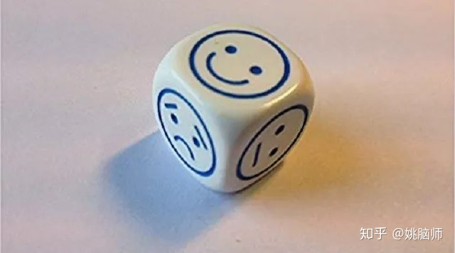
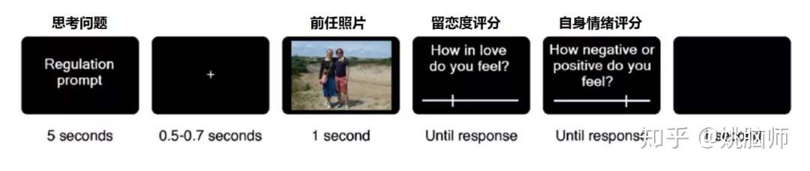
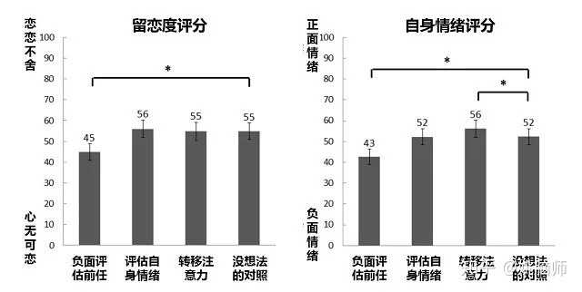
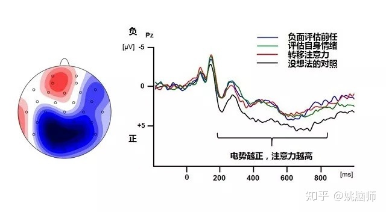

经历过的人都知道失恋很痛。
感情破裂让很多人长时间不能自拔，严重的会导致失眠，免疫力下降，抑郁甚至自杀 [1]。
如果不能尽快走出失恋的阴影，他们不仅不能正常地生活和工作，还会容易自我封闭、拒绝新的感情。
为了摆脱失恋的痛苦，有的人向时间先生求助，希望对前任的留恋会随着时间的流逝慢慢淡去 ；有的人选择疯狂工作，以转移自己对失恋的注意力；有的人日日笙歌、不醉不归，用酒精麻痹自己；而有的人则会重新审视失去的感情，理性地看待自己的得失。
那怎样做才能在失恋后尽快走向正轨呢？
今年5月在Journal of Experimental Psychology: General上面发表的一项研究就专门探讨了如何走出失恋的问题 [2]。作者们认为，失恋者之所以痛苦，是因为他们对前任还恋恋不忘。对前任爱得越深，失恋的痛苦就越大 [3]，就越难重建自我 [4]。要想走出失恋，人们应该对症下药，有意识地调控自己对前任的留恋之情。
作者们提出了三种应对失恋的策略：
\1. 对失去的旧恋情进行重新评估 \2. 对失恋后的痛苦进行重新评估 \3. 转移对失恋的注意力。
认知再评估（cognitive reappraisal）是认知行为疗法（Cognitive-Behavioural Therapy）中常用的策略。**我们可以通过对激发情感的刺激进行新的诠释，以调节自己对该刺激的情感反应。**比如我们找工作被拒（刺激）以后心里会不开心，就可以通过降低该刺激的价值（“那工作薪水这么低，其实拿到了工作我也不一定会去”）来降低自己对该刺激的消极情绪反应。同样的，在失恋之后，如果多黑一下前任（比如“我前任又胖又懒又秃头，我也不知道我看上TA什么”），对前任的留恋也许会随之减少。
**我们除了可以对刺激进行再评估，还可以对自己经历的情感进行再评估。**比如我们找工作被拒以后心里不开心（情感），就可以通过正常化该情感（“被拒肯定会不开心啊，这很正常的啊”）来降低该情绪对自己的消极影响。在失恋之后，如果我们能坦然接受自己对前任的留恋，正常化痛苦的情感反应，也许就能更容易地放下失恋的负担。
**除了对失恋进行认知评估，我们也可以通过转移注意力来减少对失恋的关注程度。**不论是找工作被拒不开心，还是失恋以后很痛苦，我们都可以窝在家里看一天的电影、打一天的游戏、或是疯狂工作来转移自己的注意力，麻痹自己的消极情感。

那这三种策略是不是有效呢？
作者招募了24名因失恋而痛苦不已的志愿者来做一个“爱情调控”实验。在每轮实验中，被试人先要根据提示思考一个问题（5秒），然后观看他们前任的照片（1秒），然后对自己的留恋程度和情绪情况进行打分（如下图）。在实验过程中，被试者的脑电活动也被记录了下来。

他们在看前任照片前有四类提示。
- 【负面评估前任的问题】“你前任有没有烦人的坏习惯？”
- 【评估自身情绪的问题】“留恋前任也没什么大不了的”
- 【转移注意力的问题】“你最喜欢的食物是什么？为什么？”
- 【啥也不想的对照组】
他们分析了被试的留恋度评分后发现，跟【没想法的对照组】比起来，【评估自身情绪】或是【转移注意力】都不能降低对前任的留恋程度，只有【负面评估前任】显著地降低了留恋度。
被试自身的情绪也有出现波动。跟【没想法的对照组】比，【评估自身情绪】对自身情绪没有显著影响，【负面评估前任】会让自己有更多的负能量，而**【转移注意力】可以让自己更开心一点。**

作者接着分析了被试观看前任照片时的脑电活动，发现**【负面评估前任】、【评估自身情绪】和【转移注意力】都降低了被试对前任的注意力（与对照相比），但是降低的程度没有显著区别。**

这项研究的结果显示，**【负面评估前任】、【评估自身情绪】和【转移注意力】都能降低失恋者对前任的关注程度，但是只有【负面评估前任】能显著的降低对前任的留恋程度。**这有可能是因为【评估自身情绪】和【转移注意力】虽然能把注意力从前任身上移开，但是并不能改变失恋者和前任的情感纽带，因此对留恋程度没有影响。
但是要注意的是，【负面评估前任】让人充满了负能量，会让自己情绪低落。有的人也可能会认为这是对旧情的一种背叛。如果采用这种策略的话，请循序渐进，适可而止哦！
祝失恋者都能早日走出阴影～
参考文献
- Field, T. (2011). Romantic break-ups, heartbreak and bereavement. Psychology, 2, 382-387.
- Langeslag, S. J. E., & Sanchez, M. E. (2018). Down-regulation of love feelings after a romantic break-up: Self-report and electrophysiological data. Journal of Experimental Psychology: General, 147(5), 720-733.
- Sbarra, D. A., & Ferrer, E. (2006). The structure and process of emotional experience following nonmarital relationship dissolution: Dynamic factor analyses of love, anger, and sadness. Emotion, 6, 224-238.
- Mason, A. E., Law, R. W., Bryan, A. E. B., Portley, R. M., & Sbarra, D. A. (2012). Facing a break-up: Electromyographic responses moderate self-concept recovery following a romantic separation. Personal Relationships, 19, 551-568.